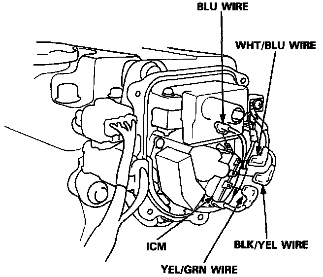

Ignition Control Module: Service and Repair
Distributor Components:

1. Remove the distributor cap and rotor.
2. Remove the distributor rotor and the leak cover.
Ignition Control Module:

3. Disconnect the BLK/YEL, WHT/BLU, YEL/GRN, BLU wires from the Ignition Control Module (ICM).
4. Remove the ICM and replace it with the new one.
5. Connect the wires, looking at the image for reference.
6. Install the leak cover and rotor.
7. Install the distributor cap securely.